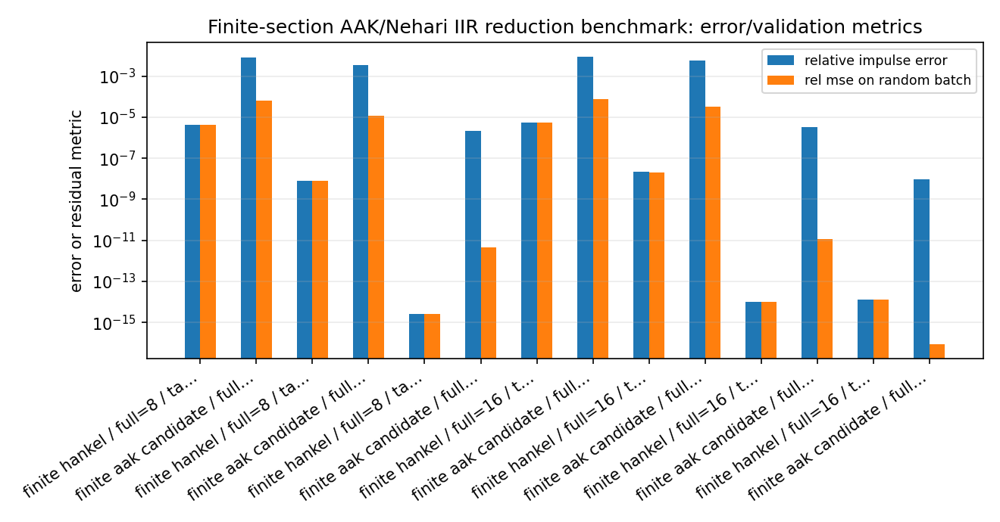
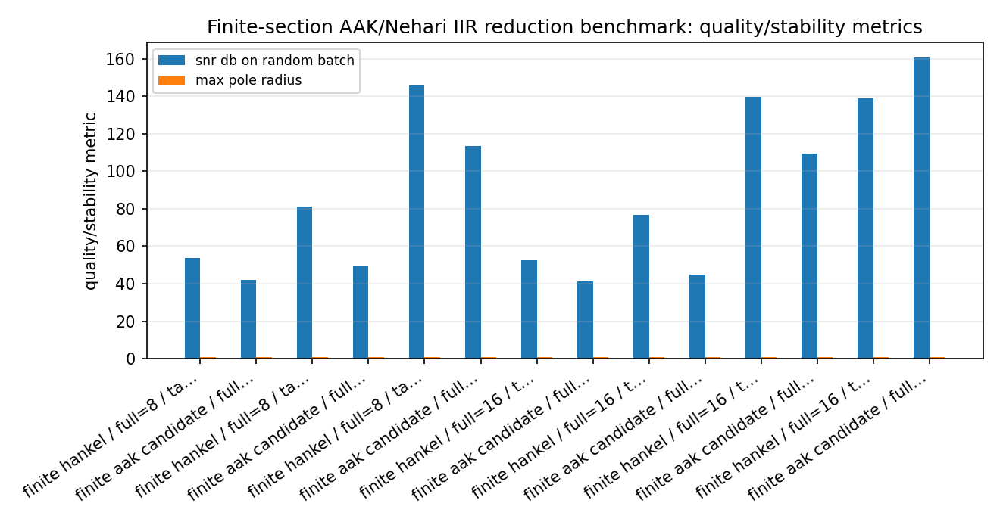
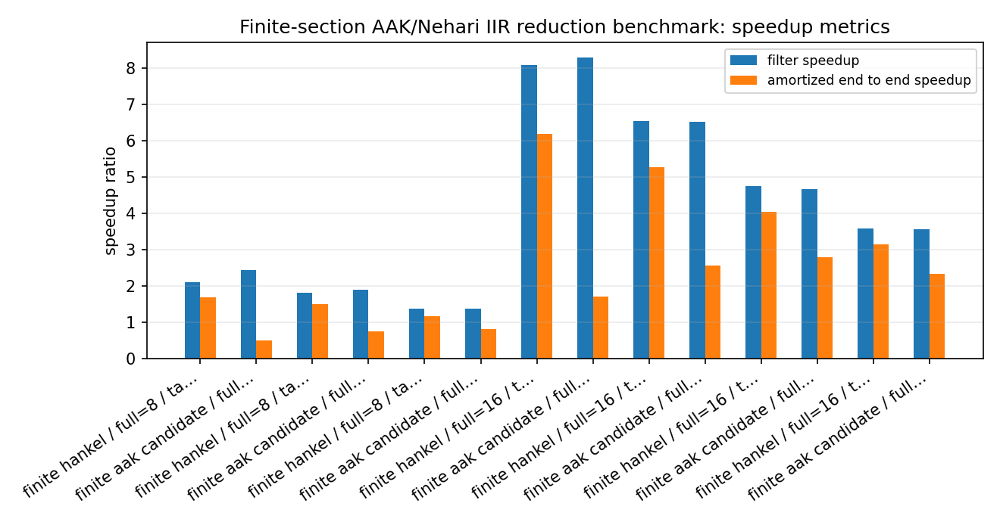
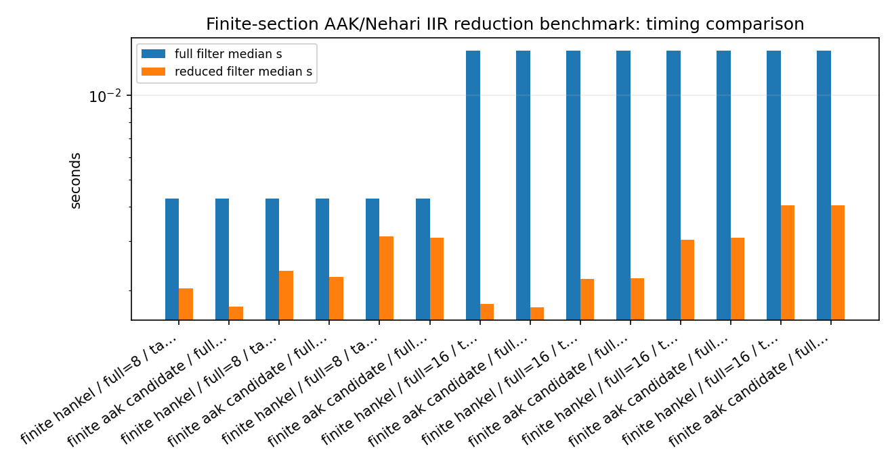

Finite-section AAK/Nehari IIR reduction benchmark¶
Tutorial goal
Compare finite-Hankel and finite-section AAK/Nehari candidate reductions on the same stable SISO IIR filters.
Note
New to the terminology? See the lattice DSP concept map and the causality/data-use guide for how online, offline, block, and MIMO examples should be read.
Context¶
The finite-Hankel reducer and the finite-section AAK/Nehari candidate workflow are both useful baselines. This benchmark runs them side by side on compressible stable SISO IIR filters and measures the practical tradeoff: reduction cost, filtering speedup, end-to-end speedup including reduction, SNR, magnitude-response error, pole radius, and break-even samples per channel.
The benchmark is deliberately finite-section. It is not a claim of exact infinite-dimensional AAK/Nehari optimality; it is a reproducible comparison of the mature baselines currently implemented in the package.
Key idea and equations¶
The end-to-end speedup includes the one-time reduction cost,
The break-even sample count estimates when preprocessing has paid for itself,
How to read the result¶
Look for stable reduced models with useful SNR/magnitude error and end-to-end speedup above one for the intended signal length.
Run command¶
python benchmarks/finite_aak_iir_reduction_speedup.py --full-orders 8 16 --target-orders 3 4 6 8 --channels 16 --samples 12000 --repeats 2 --n-impulse 384 --hankel-rows 48 --hankel-cols 48 --output docs/benchmarks/generated/_artifacts/finite_aak_iir_reduction_speedup/finite-aak-iir-reduction-speedup.json
Run status¶
Return code: 0
Visual and data readout¶
When the benchmark gallery is built with results, this page embeds PNG summaries generated from the same JSON/CSV artifacts. The raw data stay available below as downloads so exact numbers remain reproducible without making the public page read like console output.
Figures¶
{kind=link}

finite_aak_iir_reduction_speedup_error_summary.png¶
{kind=link}

finite_aak_iir_reduction_speedup_quality_summary.png¶
{kind=link}

finite_aak_iir_reduction_speedup_speedup_summary.png¶
{kind=link}

finite_aak_iir_reduction_speedup_timing_comparison.png¶
Generated data files¶
Source code¶
1from __future__ import annotations
2
3import argparse
4import json
5import math
6import platform
7import statistics
8import time
9from pathlib import Path
10from typing import Any
11from collections.abc import Callable
12
13import numpy as np
14
15import lattice_dsp as ld
16
17
18def median_time(fn: Callable[[], Any], repeats: int) -> tuple[float, Any]:
19 times: list[float] = []
20 result: Any = None
21 for _ in range(repeats):
22 t0 = time.perf_counter()
23 result = fn()
24 times.append(time.perf_counter() - t0)
25 return statistics.median(times), result
26
27
28def impulse_from_poles(poles: np.ndarray, weights: np.ndarray, n_terms: int) -> np.ndarray:
29 n = np.arange(n_terms, dtype=np.float64)
30 return np.sum(weights[:, None] * poles[:, None] ** n[None, :], axis=0)
31
32
33def numerator_from_impulse_and_denominator(impulse: np.ndarray, denominator: np.ndarray) -> np.ndarray:
34 order = denominator.size - 1
35 numerator = np.zeros(order + 1, dtype=np.float64)
36 for i in range(order + 1):
37 numerator[i] = sum(float(denominator[j]) * float(impulse[i - j]) for j in range(i + 1))
38 return numerator
39
40
41def compressible_iir(order: int, rng: np.random.Generator, n_impulse: int) -> dict[str, np.ndarray]:
42 """Build a stable real-pole IIR with decaying modal weights.
43
44 The construction gives the reduction methods a meaningful compressible model:
45 a few slow poles dominate, while many smaller modes are cheap to discard.
46 """
47
48 if order <= 1:
49 raise ValueError("order must be greater than one")
50
51 slow = np.array([0.92, 0.78, -0.58, 0.42], dtype=np.float64)
52 remaining = order - slow.size
53 if remaining > 0:
54 grid = np.linspace(0.30, 0.04, remaining)
55 signs = np.where(np.arange(remaining) % 2 == 0, 1.0, -1.0)
56 small = signs * grid
57 poles = np.concatenate([slow, small])
58 else:
59 poles = slow[:order]
60
61 # Small deterministic jitter avoids perfectly repeated benchmark cases while
62 # preserving stability and reproducibility.
63 jitter = rng.uniform(-0.008, 0.008, size=poles.size)
64 poles = np.clip(poles + jitter, -0.94, 0.94)
65
66 weights = np.zeros(order, dtype=np.float64)
67 weights[: min(4, order)] = np.array([1.0, 0.28, -0.17, 0.08], dtype=np.float64)[: min(4, order)]
68 if order > 4:
69 weights[4:] = 0.035 * np.exp(-np.arange(order - 4) / 4.0) * np.where(
70 np.arange(order - 4) % 2 == 0, 1.0, -1.0
71 )
72
73 denominator = np.asarray(np.poly(poles), dtype=np.float64)
74 impulse = impulse_from_poles(poles, weights, n_impulse)
75 numerator = numerator_from_impulse_and_denominator(impulse, denominator)
76 reflection = np.asarray(ld.denominator_to_reflection(denominator.tolist()), dtype=np.float64)
77 return {
78 "poles": poles,
79 "weights": weights,
80 "denominator": denominator,
81 "numerator": numerator,
82 "reflection": reflection,
83 "impulse": impulse,
84 }
85
86
87def process(reflection: np.ndarray | list[float], numerator: np.ndarray | list[float], x: np.ndarray) -> np.ndarray:
88 return np.asarray(ld.process_batch(list(map(float, reflection)), list(map(float, numerator)), x), dtype=np.float64)
89
90
91def snr_db(reference: np.ndarray, estimate: np.ndarray) -> float:
92 err = reference - estimate
93 p_ref = float(np.mean(reference * reference))
94 p_err = float(np.mean(err * err))
95 return 10.0 * math.log10((p_ref + 1e-30) / (p_err + 1e-30))
96
97
98def pole_radius_from_denominator(denominator: np.ndarray | list[float]) -> float:
99 denominator_arr = np.asarray(denominator, dtype=np.float64)
100 roots = np.roots(denominator_arr)
101 return float(np.max(np.abs(roots))) if roots.size else 0.0
102
103
104def frequency_response(denominator: np.ndarray, numerator: np.ndarray, n_freq: int = 512) -> np.ndarray:
105 w = np.linspace(0.0, math.pi, n_freq)
106 z = np.exp(-1j * w)
107 num = np.zeros_like(z, dtype=np.complex128)
108 den = np.zeros_like(z, dtype=np.complex128)
109 for k, coeff in enumerate(numerator):
110 num += coeff * z**k
111 for k, coeff in enumerate(denominator):
112 den += coeff * z**k
113 return num / den
114
115
116def max_magnitude_error_db(
117 full_denominator: np.ndarray,
118 full_numerator: np.ndarray,
119 reduced_denominator: np.ndarray,
120 reduced_numerator: np.ndarray,
121) -> float:
122 h_full = frequency_response(full_denominator, full_numerator)
123 h_reduced = frequency_response(reduced_denominator, reduced_numerator)
124 full_db = 20.0 * np.log10(np.maximum(np.abs(h_full), 1e-14))
125 reduced_db = 20.0 * np.log10(np.maximum(np.abs(h_reduced), 1e-14))
126 return float(np.max(np.abs(full_db - reduced_db)))
127
128
129def break_even_samples_per_channel(reduction_time_s: float, full_time_s: float, reduced_time_s: float, channels: int, samples: int) -> float | None:
130 full_per_sample = full_time_s / (channels * samples)
131 reduced_per_sample = reduced_time_s / (channels * samples)
132 delta = full_per_sample - reduced_per_sample
133 if delta <= 0.0:
134 return None
135 return reduction_time_s / delta / channels
136
137
138def serializable_row(row: dict[str, Any]) -> dict[str, Any]:
139 out: dict[str, Any] = {}
140 for key, value in row.items():
141 if isinstance(value, np.generic):
142 out[key] = value.item()
143 elif isinstance(value, np.ndarray):
144 out[key] = value.tolist()
145 else:
146 out[key] = value
147 return out
148
149
150def evaluate_reduced_model(
151 *,
152 method: str,
153 full_order: int,
154 target_order: int,
155 reduction_time_s: float,
156 full_model: dict[str, np.ndarray],
157 full_time_s: float,
158 y_full: np.ndarray,
159 reduced_reflection: np.ndarray,
160 reduced_numerator: np.ndarray,
161 reduced_denominator: np.ndarray,
162 relative_impulse_error: float,
163 accepted: bool,
164 stable: bool,
165 x: np.ndarray,
166 repeats: int,
167) -> dict[str, Any]:
168 reduced_time_s, y_reduced = median_time(lambda: process(reduced_reflection, reduced_numerator, x), repeats)
169 rel_mse = float(np.mean((y_full - y_reduced) ** 2) / (np.mean(y_full**2) + 1e-30))
170 end_to_end_speedup = full_time_s / (reduction_time_s + reduced_time_s) if reduction_time_s + reduced_time_s > 0 else None
171 be = break_even_samples_per_channel(reduction_time_s, full_time_s, reduced_time_s, x.shape[0], x.shape[1])
172 return {
173 "method": method,
174 "full_order": int(full_order),
175 "target_order": int(target_order),
176 "stable": bool(stable),
177 "accepted": bool(accepted),
178 "reduction_time_s": float(reduction_time_s),
179 "full_filter_median_s": float(full_time_s),
180 "reduced_filter_median_s": float(reduced_time_s),
181 "filter_speedup": float(full_time_s / reduced_time_s) if reduced_time_s > 0 else None,
182 "amortized_end_to_end_speedup": float(end_to_end_speedup) if end_to_end_speedup is not None else None,
183 "break_even_samples_per_channel": float(be) if be is not None else None,
184 "relative_impulse_error": float(relative_impulse_error),
185 "rel_mse_on_random_batch": rel_mse,
186 "snr_db_on_random_batch": snr_db(y_full, y_reduced),
187 "max_magnitude_error_db": max_magnitude_error_db(
188 full_model["denominator"],
189 full_model["numerator"],
190 reduced_denominator,
191 reduced_numerator,
192 ),
193 "max_pole_radius": pole_radius_from_denominator(reduced_denominator),
194 }
195
196
197def main() -> None:
198 parser = argparse.ArgumentParser(
199 description="Compare finite-Hankel and finite-section AAK/Nehari SISO IIR reduction workflows."
200 )
201 parser.add_argument("--full-orders", type=int, nargs="+", default=[8, 16, 32])
202 parser.add_argument("--target-orders", type=int, nargs="+", default=[3, 4, 6, 8, 12])
203 parser.add_argument("--channels", type=int, default=32)
204 parser.add_argument("--samples", type=int, default=30000)
205 parser.add_argument("--repeats", type=int, default=3)
206 parser.add_argument("--n-impulse", type=int, default=768)
207 parser.add_argument("--hankel-rows", type=int, default=96)
208 parser.add_argument("--hankel-cols", type=int, default=96)
209 parser.add_argument("--seed", type=int, default=314)
210 parser.add_argument("--output", default="reports/finite-aak-iir-reduction-speedup.json")
211 args = parser.parse_args()
212
213 rng = np.random.default_rng(args.seed)
214 x = rng.normal(size=(args.channels, args.samples)).astype(np.float64)
215 rows_out: list[dict[str, Any]] = []
216 criteria = ld.FiniteNehariCandidateCriteria(
217 max_tail_error=1.0,
218 max_rational_error=1.0,
219 max_pole_radius=0.999,
220 )
221
222 for full_order in args.full_orders:
223 if full_order <= 1:
224 continue
225 full_model = compressible_iir(full_order, rng, args.n_impulse)
226 full_time_s, y_full = median_time(
227 lambda fm=full_model: process(fm["reflection"], fm["numerator"], x),
228 args.repeats,
229 )
230
231 for target_order in args.target_orders:
232 if target_order >= full_order:
233 continue
234 if target_order > min(args.hankel_rows, args.hankel_cols):
235 continue
236
237 # Finite-Hankel / Ho--Kalman baseline.
238 try:
239 reduce_time, hankel = median_time(
240 lambda ro=target_order, fm=full_model: ld.finite_hankel_reduce_iir(
241 fm["reflection"].tolist(),
242 fm["numerator"].tolist(),
243 reduced_order=ro,
244 n_impulse=args.n_impulse,
245 rows=args.hankel_rows,
246 cols=args.hankel_cols,
247 ),
248 1,
249 )
250 if bool(hankel["stable"]) and hankel.get("reflection"):
251 rows_out.append(
252 serializable_row(
253 evaluate_reduced_model(
254 method="finite_hankel",
255 full_order=full_order,
256 target_order=target_order,
257 reduction_time_s=reduce_time,
258 full_model=full_model,
259 full_time_s=full_time_s,
260 y_full=y_full,
261 reduced_reflection=np.asarray(hankel["reflection"], dtype=np.float64),
262 reduced_numerator=np.asarray(hankel["numerator"], dtype=np.float64),
263 reduced_denominator=np.asarray(hankel["denominator"], dtype=np.float64),
264 relative_impulse_error=float(hankel["relative_impulse_error"]),
265 accepted=True,
266 stable=True,
267 x=x,
268 repeats=args.repeats,
269 )
270 )
271 )
272 else:
273 rows_out.append(
274 {
275 "method": "finite_hankel",
276 "full_order": full_order,
277 "target_order": target_order,
278 "stable": bool(hankel.get("stable", False)),
279 "accepted": False,
280 "reduction_time_s": float(reduce_time),
281 "error": "reduced model was not stable in scalar lattice coordinates",
282 }
283 )
284 except Exception as exc: # noqa: BLE001 - benchmark rows should report failures.
285 rows_out.append(
286 {
287 "method": "finite_hankel",
288 "full_order": full_order,
289 "target_order": target_order,
290 "stable": False,
291 "accepted": False,
292 "error": str(exc),
293 }
294 )
295
296 # Finite-section AAK/Nehari candidate using the same target order.
297 try:
298 reduce_time, aak = median_time(
299 lambda ro=target_order, fm=full_model: ld.finite_aak_reduce_iir(
300 fm["reflection"],
301 fm["numerator"],
302 ranks=[ro],
303 n_impulse=args.n_impulse,
304 rows=args.hankel_rows,
305 cols=args.hankel_cols,
306 criteria=criteria,
307 attach_certificate=True,
308 ),
309 1,
310 )
311 if bool(aak["stable"]) and aak["reduced_reflection"].size:
312 rows_out.append(
313 serializable_row(
314 evaluate_reduced_model(
315 method="finite_aak_candidate",
316 full_order=full_order,
317 target_order=target_order,
318 reduction_time_s=reduce_time,
319 full_model=full_model,
320 full_time_s=full_time_s,
321 y_full=y_full,
322 reduced_reflection=np.asarray(aak["reduced_reflection"], dtype=np.float64),
323 reduced_numerator=np.asarray(aak["reduced_numerator"], dtype=np.float64),
324 reduced_denominator=np.asarray(aak["reduced_denominator"], dtype=np.float64),
325 relative_impulse_error=float(aak["relative_impulse_error"]),
326 accepted=bool(aak["accepted"]),
327 stable=bool(aak["stable"]),
328 x=x,
329 repeats=args.repeats,
330 )
331 )
332 )
333 else:
334 rows_out.append(
335 {
336 "method": "finite_aak_candidate",
337 "full_order": full_order,
338 "target_order": target_order,
339 "stable": bool(aak.get("stable", False)),
340 "accepted": False,
341 "reduction_time_s": float(reduce_time),
342 "error": "selected candidate was not stable in scalar lattice coordinates",
343 }
344 )
345 except Exception as exc: # noqa: BLE001 - benchmark rows should report failures.
346 rows_out.append(
347 {
348 "method": "finite_aak_candidate",
349 "full_order": full_order,
350 "target_order": target_order,
351 "stable": False,
352 "accepted": False,
353 "error": str(exc),
354 }
355 )
356
357 result = {
358 "metadata": {
359 "python": platform.python_version(),
360 "platform": platform.platform(),
361 "has_openmp": bool(ld.HAS_OPENMP),
362 "channels": args.channels,
363 "samples": args.samples,
364 "repeats": args.repeats,
365 "n_impulse": args.n_impulse,
366 "hankel_rows": args.hankel_rows,
367 "hankel_cols": args.hankel_cols,
368 "seed": args.seed,
369 "description": (
370 "Finite-Hankel versus finite-section AAK/Nehari SISO IIR reduction benchmark. "
371 "Both methods are finite-section baselines; neither is claimed to be a full infinite-dimensional solver."
372 ),
373 },
374 "rows": rows_out,
375 }
376
377 output = Path(args.output)
378 output.parent.mkdir(parents=True, exist_ok=True)
379 output.write_text(json.dumps(result, indent=2), encoding="utf-8")
380
381 print(json.dumps(result["metadata"], indent=2))
382 print()
383 print(
384 f"{'method':>21s} {'full':>5s} {'red':>5s} {'stable':>7s} {'reduce_s':>10s} "
385 f"{'filter_x':>9s} {'end2end_x':>10s} {'SNR':>8s} {'mag_err':>9s} {'break_even/ch':>15s}"
386 )
387 print("-" * 115)
388 for row in rows_out:
389 if "error" in row:
390 print(
391 f"{row['method']:>21s} {row['full_order']:5d} {row['target_order']:5d} "
392 f"{str(row.get('stable', False)):>7s} {float(row.get('reduction_time_s', 0.0)):10.4f} ERROR: {row['error']}"
393 )
394 continue
395 be = row["break_even_samples_per_channel"]
396 be_text = "n/a" if be is None else f"{be:.0f}"
397 print(
398 f"{row['method']:>21s} {row['full_order']:5d} {row['target_order']:5d} {str(row['stable']):>7s} "
399 f"{row['reduction_time_s']:10.4f} {row['filter_speedup']:9.2f} "
400 f"{row['amortized_end_to_end_speedup']:10.2f} {row['snr_db_on_random_batch']:8.2f} "
401 f"{row['max_magnitude_error_db']:9.3f} {be_text:>15s}"
402 )
403
404 print()
405 print(f"Wrote {output}")
406
407
408if __name__ == "__main__":
409 main()